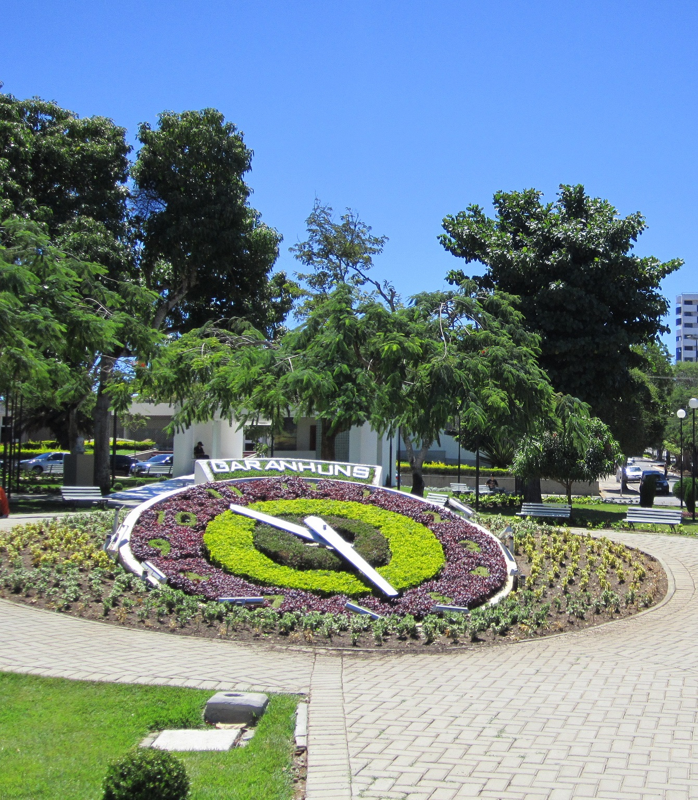
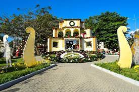

Garanhuns city
Garanhuns é um município brasileiro do agreste do estado de Pernambuco, distante 230 quilômetros da capital pernambucana, Recife. Ocupa uma área de 458,550 km², sendo 7,11 km² formando o perímetro urbano e 451,44 km² formando a zona rural.
 